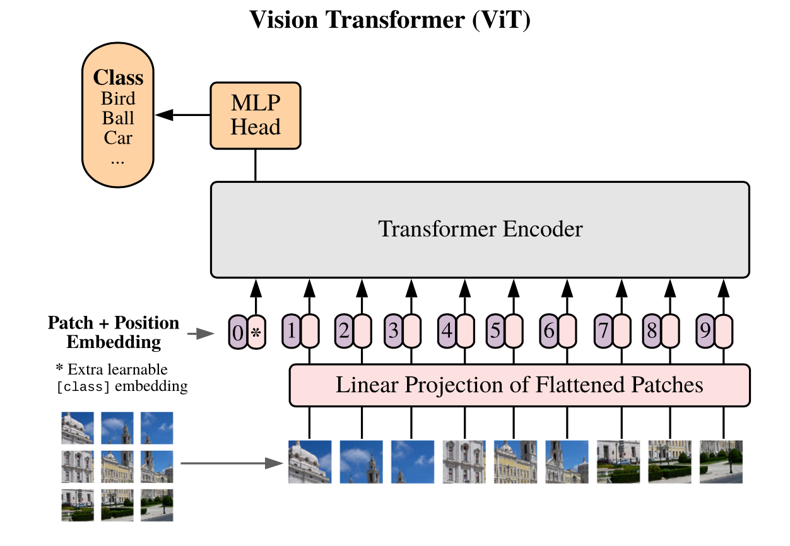

画像認識について
画像認識とは、画像から特徴をつかみ、対象物を識別するパターン認識技術の1つです。
画像データから対象物となる輪郭を洗い出し、背景から分離した上で特徴を抽出し、マッチングや変換を行い、目的となるオブジェクトや特徴を特定して認識する仕組みで、その対象物が何であるかを分析します。
人間の場合、「画像に写っているものが何であるか？」について、得ている経験から理解して判断を行い、画像に映る人物やオブジェクトを簡単に特定できます。人間なら無意識に行われている行為ですが、ピクセル単位で情報を管理するコンピューターにとって、画像に何が写っているかを理解するのは非常に難しく、高度で複雑な処理となります。
Transformerについて
Transformerは計算の高速化を妨げていたRNNを利用していません。RNNを使わないことで、並列計算が可能になり計算量も小さくなります。しかし、RNNを利用しなくなったことでデータ同士の長期依存関係を取得できなくなりました。この問題を解決する為に2つ取り入れたことがあります。
・入力と出力の文章同士の広範囲な依存関係を捉えられるAttentionの採用
・単語の位置情報を埋め込む層であるPositionalEncoding層の採用
結果、Attentionによって意味的つながりを取得でき、PositionalEncodingによって位置的つながりを取得できることになります。また、Attention層におけるQuery-Key-Valueモデルの採用したことにより単語同士の照応関係を正確に反映することができます。
以上の特徴により、計算を高速化した上で、文脈情報を保持することに成功し、より正確な変換（翻訳）を可能にすることができました。また、Transformerは他のタスクにも汎用性が高いという利点もあります。
Vision Transformerについて
【Vision Transformerのモデル構造】

引用：“An Image is Worth 16x16 Words: Transformers for Image Recognition at Scale”
①Linear Projection of Flattened Patches（一次データ化されたパッチの線形射影）
Transformerは画像をシークエンスデータとして受け取るため、二次元である画像データをパッチごとに一次元のシークエンスデータに変換して線形射影します。線形射影して得られた出力をPatch Embeddingと呼びます。この線形射影が行われるのは、Transformerではすべての層を通して一定の次元であるデータが使用されるからです。
②Extra learnable [class] embedding（学習可能な[class]トークンの埋め込み）
画像分類を可能にするために、シークエンスデータの先頭に学習可能な[class]トークンを追加します。
③Position Embedding（位置埋め込み）
パッチが画像のどこにあるかを識別する位置情報を付与します。
④Transformer Encoder
TransformerはMultihead Self-AttentionブロックとMulti Layer Pecerptronが交互になる形で構成されています。これらのブロックの前にはLayer Normalizationが、ブロックの後には残差接続(層を飛び越えた接続)が適用されています。Self-Attentionを通して自然言語処理の時と同様にパッチごとの（q, k, v）= (query, key, value)を獲得してパッチごとの対応関係を取得していきます。
⑤MLP
分類ヘッドと接続して画像分類タスクに応用します。活性関数には非線形のGELUを用いています。
参考資料：